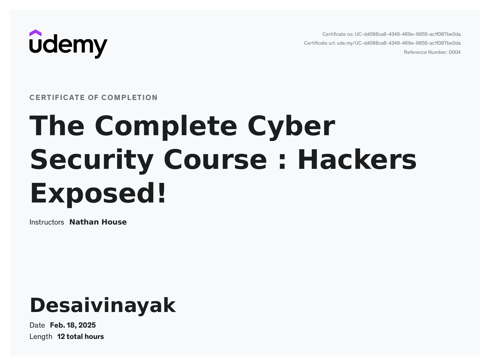

MCA 2nd Year Student | Data Science & Cybersecurity Enthusiast | SCET
I am currently in my 2nd year of MCA at SCET College. I have completed industrial training with SHELL focused on Data Science and IoT, and a 12-hour Cyber Security course on Udemy. I'm passionate about working with real-time data, predictive analytics, and ethical cybersecurity practices.
Completed: The Complete Cyber Security Course: Hackers Exposed! by Nathan House on Udemy (12 hours)
